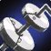

دریافت یک کیف ۱۶ اسلاتی رایگان از کوئستلاین سابق SoD در سرور Forever
زنجیرهکوئست مربوط به ران Shockwave از Season of Discovery وارد سرور Forever شده و این بار بدون محدودیت کلاس، یک کیف ۱۶ اسلاتی و جوایز دیگر به بازیکنان پاداش میدهد.

بسیاری از زنجیرهکوئستهای Season of Discovery راه خود را به سرور Forever باز کردهاند و کوئست مربوط به ران Shockwave کلاس Warrior نیز یکی از آنهاست. برعکس دورهٔ SoD، این خط کوئست اکنون برای تمام کلاسها بدون محدودیت در دسترس قرار دارد و در اواسط آن آیتم Red Bag به عنوان یک کیف ۱۶ اسلاتی رایگان اعطا میشود.
مجهز کردن Red Bag سطح پنهانکاری (Stealth) موثر را به میزان ۲ واحد کاهش میدهد. این جریمه تنها برای Rogue و Druid اعمال میشود و سایر کلاسها بدون هیچ مشکلی میتوانند از آن استفاده کنند.
جوایز این مسیر فقط به این کیف محدود نمیشود. بخش پایانی این زنجیره با کوئست Rift Away بازیکن را در برابر Harvest Golem V000-A قرار میدهد؛ یک الیت با بیش از ۲۰۰ هزار (200k) هلث که آیتم ترنسموگ منحصربهفرد Sun Shades و همچنین 
مراحل انجام کوئستلاین
- آبجکت Half-Buried Mech را در مختصات 59.2 91.5 در سواحل جنوبی Tanaris پیدا کرده و دو بار روی آن کلیک کنید تا کوئست Beach Bot تکمیل شود و معجون Guided Buoyancy Accelerant را دریافت کنید.
- کوئست Mechanical Romance را بردارید، در دوردست دنبال فانوس دریایی بگردید، معجون را بنوشید و به همان سمت شنا کنید. وقتی به مرز خستگی اقیانوس (fatigue zone) رسیدید، جزیره کوچکی را در دوردست میبینید؛ در یک خط مستقیم به سمت آن شنا کنید.
- کوئست را تحویل Sebastian Jurgens در این جزیره دورافتاده دهید و کوئست Frosty Favors را بگیرید.
- به Winterspring بروید و کوئست را در Everlook به Nami در مختصات 61.2 37.0 تحویل دهید.
- کوئست Red Bag Blues را بگیرید و عازم Burning Steppes شوید. برای پیدا کردن Red Bag از کوه در مختصات 59, 29 بالا بروید تا به کمپ دورافتاده در مختصات 53.0 24.8 در شمال برسید.
- کوئست Poacher's Den را بردارید و مابهای لول 59 به نامهای Blackrock Bootlegger و Sulfuron Smuggler را بکشید تا Vertically Composited Patch Hampler و Brass-fitted Flam-Tamp Flange به دست آیند (برخی قطعات روی زمین نیز یافت میشوند).
- کوئست را در Everlook تحویل دهید و کتاب Fantastic Inventions را دریافت کنید. سپس کوئست Bookin' it Back را برای بازگشت به جزیره Tanaris بردارید.
رویارویی نهایی با Harvest Golem V000-A
در ادامهٔ مسیر و در کوئست Rift Away مقداری تعامل داستانی دریافت میکنید. Sebastian را تا تلپورتر دنبال کنید تا شما را به Westfall یا Tirisfal Glades تلپورت کند. پس از صحبت مجدد با او و فشردن دکمه، باس Harvest Golem V000-A احضار میشود. با توجه به جان بالای این موجود الیت (بیش از 200,000 هلث)، توصیه میشود حداقل یک هیلر و یک یا دو DPS همراه داشته باشید.
- فاز اول: کستهای Harvest Golem V000-A را قطع (Kick) کنید.
- فاز دوم: باس Harvest Golem V000-A را کایت کنید تا استکهای آرمور او از بین برود.
- فاز سوم: از کولدانهای دفاعی استفاده کنید تا ضربات سنگین را تحمل کرده و در نهایت باس را بکشید.
پس از کشته شدن باس، آیتم Mech Arm را از روی زمین لوت کنید تا بتوانید جوایز نهایی خود را دریافت نمایید.